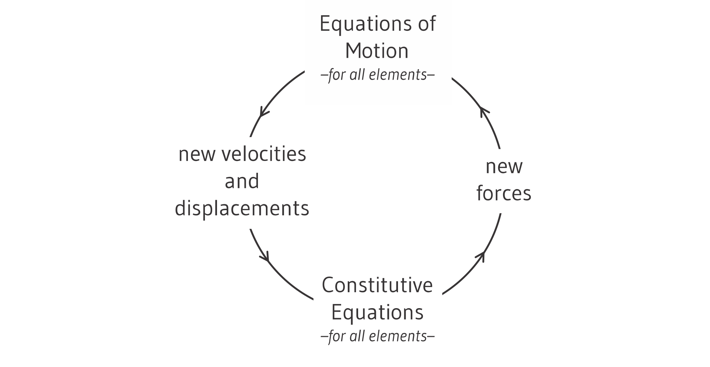

时间步
Itasca 各数值模拟程序都是以显式求解牛顿运动定律为基础的计算引擎。显式计算是整个程序的骨干，程序会按需在此基础上增加附加内容或可选处理（例如热力解的隐式计算、动力计算中的多重时间步进等）。
模型状态通过一系列称为时间步（或简称步）的计算循环向前推进。每个循环由一系列操作组成，这些操作称为循环序列。在不同程序之间，构成该序列的具体操作会有所不同——这是各特定程序任务的需要。下文逐一列举每个特定的序列。但对所有程序而言，该序列的一般形式可如下图所示。

图 1：Itasca 软件中的时间步。
一步（也常称为“循环”）是上述回路的单次迭代。求解运动方程时，所有单元的力固定不变；求解本构方程时，由运动产生的效应（PFC 中的位移；FLAC3D 中的应变率）固定不变。之所以如此，是因为显式求解格式假定在一个时间步内信息传播的距离不超过一个单元。因此，时间步的长度取决于材料密度、接触或网格单元刚度以及单元尺寸。
启动与停止循环
发出 执行计算时步（model cycle） 或 求解模型（model solve） 命令即可启动这一过程——循环。循环会一直进行，直到达到一个或多个求解限制。使用 执行计算时步（model cycle） 命令时，求解限制是命令中指定的循环次数，达到该次数时循环终止。反之，使用 求解模型（model solve） 命令时可同时指定多个求解限制，只要满足其中至少一个求解限制，循环便终止。程序内置了若干求解限制（详见 求解模型（model solve） 文档）。此外，还可将一个或多个 FISH 函数指定为求解限制，从而自定义循环终止判据。

图 2：一系列循环的示意图。单个计算循环不断执行，直至满足一个或多个求解限制。
在初始化阶段，程序建立模型数据结构、重置循环期间使用的变量，并检查模型状态在可以开始循环的意义上是否有效。需要这样检查的原因有多种（例如，在 PFC 中，若任何球体或刚性团簇质量为 0，则不能循环，因为结果无定义；在 FLAC3D 中，若有网格单元尚未赋予本构模型，则不能循环，等等）。组成循环序列的操作（见下文）在每个计算循环中执行。计算循环结束后，检查求解限制；若满足或超过一个或多个求解限制，则循环终止。若未满足任何求解限制，则继续执行计算循环。在收尾阶段，创建/删除模型元素，并更新需要校验的数据结构，以确保在将交互控制台交还用户以接受后续输入之前模型状态是一致的。
循环过程中，用户可从工具栏手动终止循环，或按 Shift+Esc 组合键终止。若请求手动终止循环，则当前计算循环会执行完毕，并执行收尾阶段，然后将控制权交还用户。
循环序列
每个计算循环中执行的操作序列称为循环序列。循环序列由一组有序操作构成，其中每个操作都分配有一个浮点数，称为循环点。下表列出了各 Itasca 程序的具体操作及关联的循环点。
PFC 循环序列
| 循环点 | 循环操作 |
|---|---|
| -10.0 | 校验数据结构（Validate data structures） |
| 0.0 | 确定时间步（Timestep determination） |
| 10.0 | 运动定律（或更新热体）（Law of motion (or update thermal bodies)） |
| 15.0 | 各过程之间的体耦合（Body coupling between processes） |
| 20.0 | 推进时间（Advance time） |
| 30.0 | 更新空间搜索数据结构（Update spatial searching data structures） |
| 35.0 | 创建/删除接触（Create/delete contacts） |
| 40.0 | 力-位移定律（或热接触更新）（Force-displacement law (or thermal contact update)） |
| 42.0 | 累积确定性量（Accumulate deterministic quantities） |
| 45.0 | 各过程之间的接触耦合（Contact coupling between processes） |
| 60.0 | 运动方程的第二遍计算（PFC 中不使用） |
| 70.0 | 热计算（PFC 中不使用） |
| 80.0 | 流体计算（PFC 中不使用） |
最后一个标题
关于 PFC 中该循环序列的逐步说明，参见 循环（Cycling）。
| 这些内容对您有帮助吗？… | FLAC3D © 2019, Itasca | 原文更新于 2020 年 10 月 8 日 |